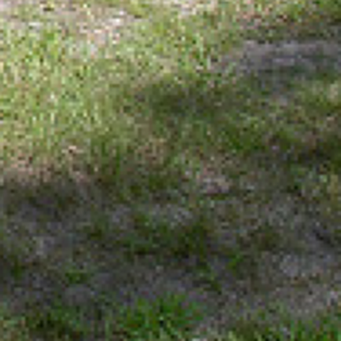
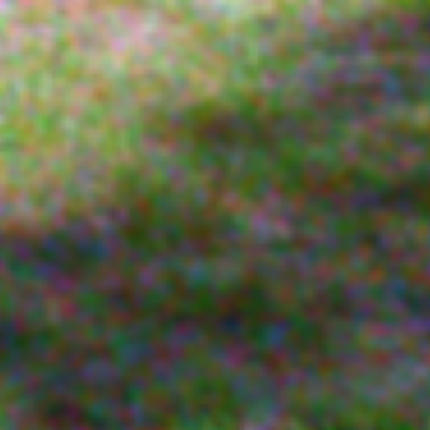
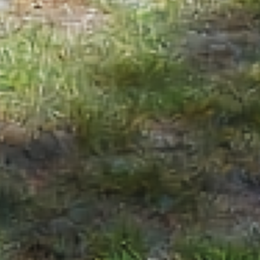
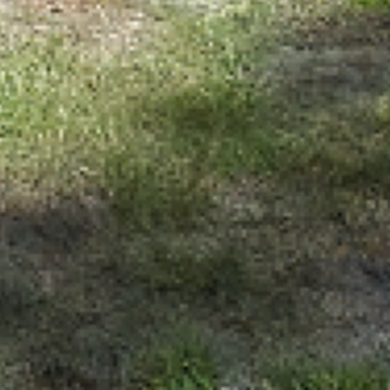
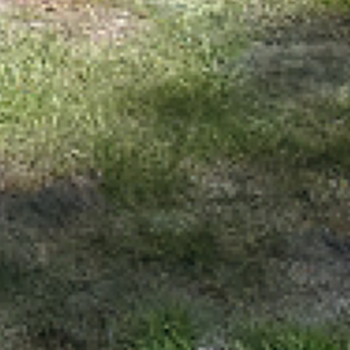
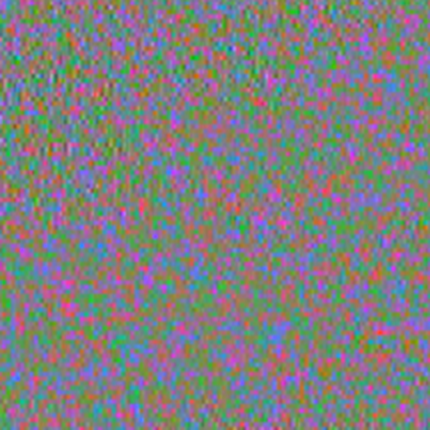

Le principe


objectif
Des milliers d’exemples : photo + faux bruit → photo propre.
Il apprend à passer de l’un à l’autre.
Filtre classique

Sans réseau : chaque pixel prend la moyenne de ses voisins.
Erreur ÷ 2, mais tout est flou.
① Autoencodeur

Il résume l’image, puis la redessine : le bruit ne passe pas.
Erreur ÷ 9, mais détails perdus.
② + raccourcis

Les détails fins sautent le résumé, directement vers le dessin.
Erreur ÷ 18 : l’image reste nette.
③ + il redessine le bruit


bruit retiré
retenu
Il redessine seulement le bruit, qu’on retire de la photo.
Erreur ÷ 19, zones propres intactes.